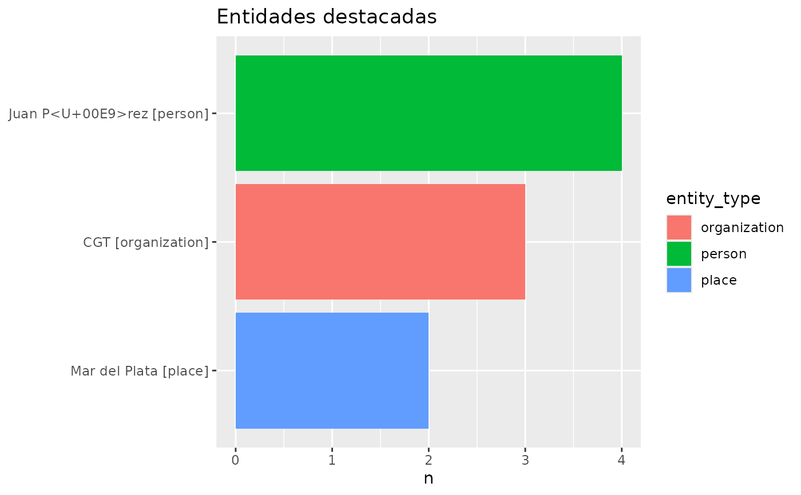

Plot entity frequencies
entropia_plot_entities.RdPlots the output of entropia_entity_frequency() as a horizontal bar chart
of the top entity values, filled by a column of x (by default
entity_type). Each source row has its own bar position, so repeated labels
or distinct IDs are never stacked or silently merged. Highest values appear
at the top. Global ranking selects rows, not aggregated labels; group ranking
selects up to top rows per group/facet combination. Ties use input order.
Usage
entropia_plot_entities(
x,
top = 10,
fill = "entity_type",
group = NULL,
facet = NULL,
top_by = "global",
value = "n"
)Arguments
- x
A data frame or tibble with
valueandncolumns (and typicallyentity_type), e.g. the output ofentropia_entity_frequency().- top
Number of top rows (by
n) to plot. Default10.- fill
Column of
xto colour the bars by, selected by name or bare. Default"entity_type".- group
Optional grouping column, bare or named. Automatic grouping errors if remaining dimensions are ambiguous; IDs take precedence.
- facet
Optional faceting column, bare or named.
- top_by
Either
global(default) orgroup.- value
Numeric measure column, bare or named; defaults to
n.
Examples
freq <- data.frame(
entity_type = c("person", "organization", "place"),
value = c("Juan P<U+00E9>rez", "CGT", "Mar del Plata"),
n = c(4L, 3L, 2L)
)
if (requireNamespace("ggplot2", quietly = TRUE)) {
p <- entropia_plot_entities(freq)
p + ggplot2::labs(title = "Entidades destacadas")
}
